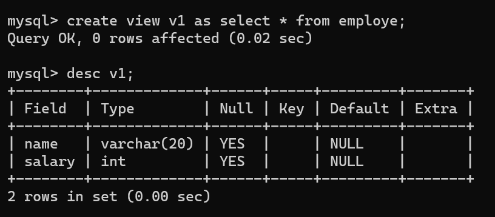
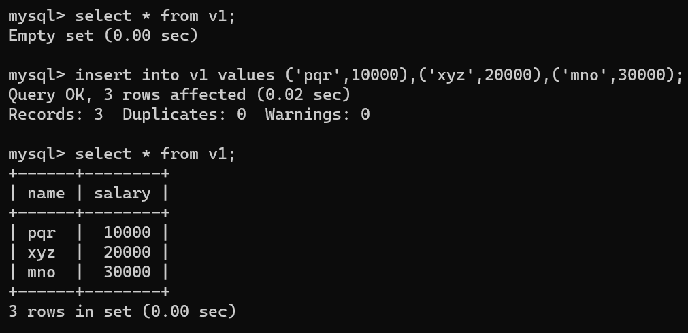
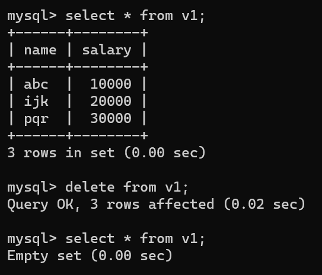
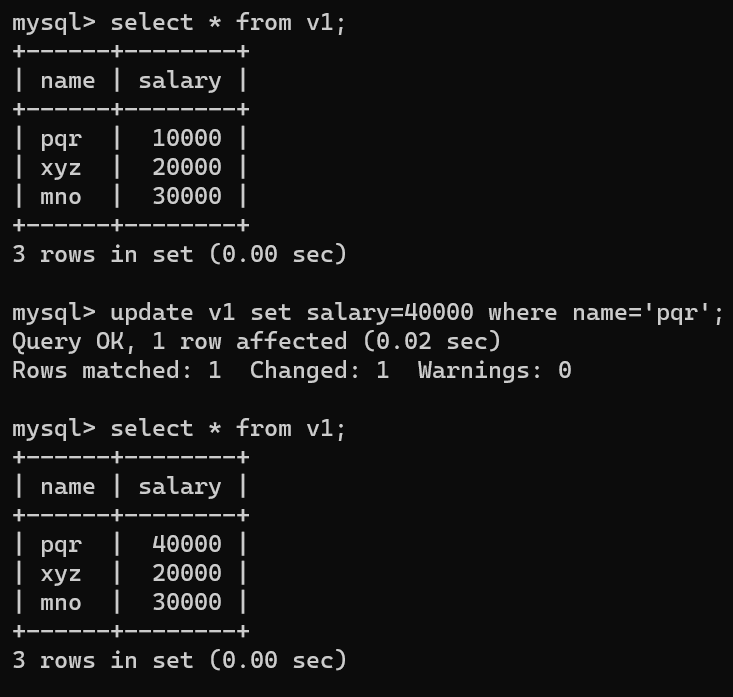

Views is a virtual table, through which a selective portion of the data from one or more tables cal be seen. A view contains no data of its own but it is like a window through which data from tables can be viewed of changed. The tables on which a view is based are called base tables. Base tables might in turn be actual tables or might ne views themselves. All operations performed ona view actually effect the base table of the view. DML operations on a view like INSERT, UPDATE, DELETE affects the data in the original table upon which the view is based. you can use views in almost the same way as tables.
Syntax :- create view view_name as select column1, column2 from table_name [where conditon];
Example :- create view v1 as select *from emp where deptno = 20;
Insert statement is used to insert new row or records into a view. Values can be inserted for all the columns or for the selected columns of the view.
Syntax :- insert into view_name values(value1, value2, value3, .... valueN);
Delete statement is used to delete rows from a table
Syntax :- delete from view_name[where condition];
Update statement is used to update or modify the existing rows in a table.
Syntax :- update table_name set column_name1 = value1, column_name2 = value2 ... [where condition];
